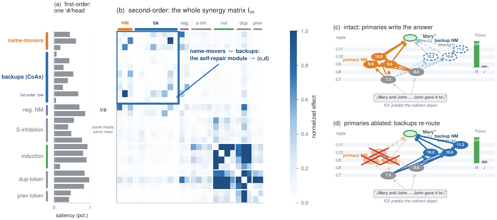
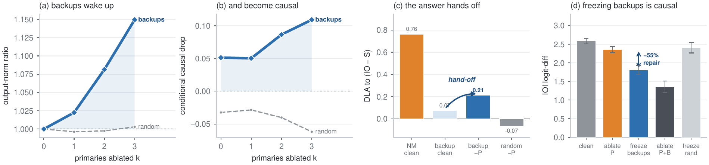
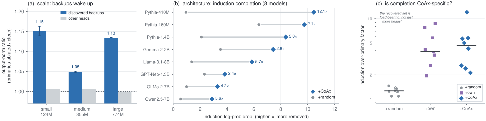
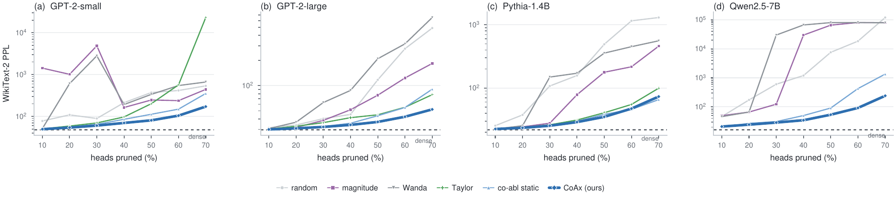

Importance is conditional, not intrinsic
Interpretability scores a component by ablating it in isolation. That view quietly breaks whenever a circuit is redundant: remove a primary component and a dormant backup takes over, so the primary looks unimportant (the model repaired the damage) and the backup looks unimportant too (it was silent all along). A single-ablation score misreads both sides of the redundancy — and attribution, knockout, and pruning inherit the error.
CoAx asks a different question: once the primary circuit is removed, how much does each remaining unit's ablation effect grow? Measured in the output distribution's own (Fisher) metric, the score is the growth of a unit's ablation energy under conditioning:
Large for a dormant backup, near zero otherwise — label-free, gradient-free, and O(#heads) forward passes. The seed can come from any first-order method; CoAx completes that circuit by returning the backups it hides.
The first-order blind spot
Every point is one of GPT-2-small's 144 attention heads, placed by its first-order saliency and its CoAx score. The documented backups (★) hide in the shaded blind spot — low first-order, high CoAx. Hover a point.
First-order saliency ranks the backups near the bottom (they are dormant); conditional co-ablation ranks the same heads at the top. Same heads, two scores.
A self-repair module, and the circuit it re-wires

Why a knockout needs the backups
Ablate the “circuit” a first-order analysis returns — the three name-mover primaries — and the answer barely moves: the backups silently take over. You have to remove the backups too. Click the buttons.
A first-order top-up of the same size overshoots into the core name-movers; CoAx removes exactly the compensators a complete knockout needs, matching the documented oracle.
They wake up — and the wake-up is causal

Recovery, generalization, and the downstream payoff
Backup recovery on GPT-2 IOI (ROC-AUC)
| score | backup ROC-AUC |
|---|---|
| single ablation 1st | 0.33 |
| attribution patching (AtP) 1st | 0.60 |
| EAP-IG 1st | 0.70 |
| AtP* GradDrop 1st | 0.82 |
| CoAx 2nd | 0.91 |
Every additive / self-repair-aware score falls short; the gap is the node-additive form, not a smarter gradient.


Paper, code, and citation
@inproceedings{gong2026coax,
title = {Conditional Co-Ablation: Recovering Self-Repair Backups in Transformer Circuits},
author = {Gong, Zhiren and Zeng, Zihao and Yuen, Chau and Lim, Wei Yang Bryan},
year = {2026},
note = {Project page: https://gongzhiren.github.io/Conditional-Co-Ablation-website}
}